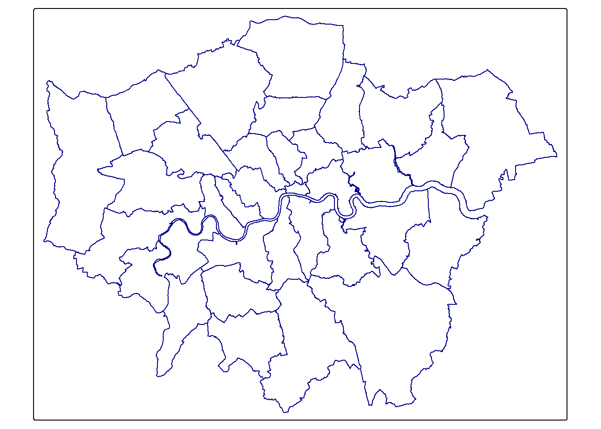

Chapter 5 Map making
5.1 Learning outcomes
By the end of this practical you should be able to:
- List and explain basic mapping concepts in R
- Interpret and manipulate data from multiple sources
- Create near publishable static and interactive mapped outputs
This practical has been updated to tmap version 4. If you are a student studying for the LSA in 2025 and wish to use the original practical please see the extras section.
5.2 Homework
Outside of our scheduled sessions you should be doing around 12 hours of extra study per week. Feel free to follow your own GIS interests, but good places to start include the following:
Exam
Each week we will provide a short task to test your knowledge, these should be used to guide your study for the final exam.
The task this week is to:
- Fork the repository below you from the spreadsheet last week
- Run the code, editing it if required
- Create a map (you can use additional data if you wish)
- submit a pull request to the original person
Reading
This week:
Chapter 8 “Making maps with R†from Geocomputation with R by Lovelace, Nowosad and Muenchow (2020)
How to lie with maps, Chapter 10 by Monmonier (1996).
Watching
Remember this is just a starting point, explore the reading list, practical and lecture for more ideas.
5.3 Recommended listening 🎧
Some of these practicals are long, take regular breaks and have a listen to some of our fav tunes each week.
Andy. Mumford & Sons, unique sound classed as British folk rock apparently. Enjoy!
Adam Your ears are in for an absolute treat this week. Hospital Records have only gone and put out a mind-blowing mini compilation album which completely smashes it. It’s NHS400 - get your ears around this!
5.4 Introduction
In this practical we’re going to focus on creating mapped outputs in R. For fun we’re going to use data from OpenStreetMap (OSM) and Airbnb.
Within this practical we show how to make maps in just R. We used to provide instructions for QGIS and these have been moved to the additional resources section. It is useful to have some knowledge of QGIS for your future career but it is not needed for the exam.
5.4.1 OSM
OpenStreetMap is collaborative project that has created a free editable map of the World. As users can create their own content it is classed as Volunteered geographic Information (VGI). There is a lot of academic literature on VGI, it’s advnatages and disadvantages. For an overview of VGI checkout this article by Goodchild (2007).
If you are interested in exploring the power of VGI and OSM further checkout missing maps. They aim to map missing places, often in less developed countires, using OSM so that when natural disasters occur first responders can make data informed decisions. They run events all over the world and it’s worth going to meet other spatial professionals, gain some experience with OSM and contribute to a good cause.
5.5 Data
It’s possible to download OSM data straight from the website, although the interface can be a little unreliable (it works better for small areas). There are, however, a number of websites that allow OSM data to be downloaded more easily and are directly linked to from the ‘Export’ option in OSM. Geofabrik (one of these websites) allows you to download frequently updated shapefiles for various global subdivisions.
5.5.1 OSM
Go to the Geofabrik download server website
Navigate to: Europe > United Kingdom > England > Greater London
Download greater-london-latest-free.shp.zip
Unzip the data and save it to your current folder
5.5.2 London boroughs
We’ll use our London boroughs layer again, either load it from week 1 or download it:
To get the data go to the London data store
Search for Statistical GIS Boundary Files for London
Download the statistical-gis-boundaries-london.zip
Unzip the data and save it to your current folder
5.5.3 World cities
We will use World cities to provide some context to our maps.
- Download them from the ArcGIS HUB > Download > Shapefile.
5.5.4 Uk outline
- Download GADM data for the UK
5.5.5 Airbnb
- Download the
listings.csvfrom the inside airbnb website for London.
In the lecture we discussed how when producing maps there should be some sort of common denominator as opposed to mapping raw counts. Go and source a suitable common denominator then using the skills from previous weeks normalise your data. Hint there is a table on the Office for National Statistics NOMIS website called number of bedrooms which would let you normalise the airbnb and hotel data based on the number of bedrooms in each ward.
5.6 Plan
Before we being, it’s useful to draw out what we want our final map to look like otherwise you might find yourself drowning in code without a clear aim. Here, i want to compare airbnbs and hotels across London boroughs…
I’ve selected boroughs for ease and to show certain concepts:
- Boroughs are not a good spatial unit for this
- We should never use count data for mapping
I am going to make a few maps but the first one will resemble an academic figure where there will be sub-figures (e.g. A, B), a study area location map and a legend.
My drawing skills are very average, but something like this…

Figure 5.1: Map plan
So…where do we begin
Conceptually think of each section (A), (B) as a separate object. For example, my sub-figure (A) will be a London borough ‘sf’ object that has a column of Hotels. (B) will be the same but for Airbnbs.
We need to wrangle our data to get to that point, this will include:
- Downloading data:
For sub figures (A) and (B)
- London borough MSOAs (shp)
- Airbnbs (csv)
- Hotels (shp)
For the location map
- Outline of the UK (shp)
- UK cities (shp)
- Setting the CRS and filtering:
- Our CRS for the Boroughs needs to be British national grid (BNG)
- Filter hotels from the OSM data
- Filter equivalent airbnbs (e.g. room_type == ‘Entire home/apt’ & availability_365 ==‘365’)
- Joining and summing data
- Join the Airbnbs to the MSOAs and sum (i.e. how many are in each MSOA)
- Join the Hotels to the MSOAs and sum
- Making some maps.
5.7 CRS and filter
We can start with our OSM and Airbnb data which we need for our sub figures…
- OSM
- Airbnb
- MSOAs
library(sf)
library(tidyverse)
# OSM data
OSM <- st_read("prac5_data/greater-london-latest-free.shp/gis_osm_pois_free_1.shp")%>%
st_transform(., 27700) %>%
#select hotels only
filter(fclass == 'hotel')## Reading layer `gis_osm_pois_free_1' from data source
## `C:\Users\Andy\OneDrive - University College London\Teaching\CASA0005\CASA0005repo\prac5_data\greater-london-latest-free.shp\gis_osm_pois_free_1.shp'
## using driver `ESRI Shapefile'
## Simple feature collection with 57306 features and 4 fields
## Geometry type: POINT
## Dimension: XY
## Bounding box: xmin: -0.5090921 ymin: 51.29201 xmax: 0.2957296 ymax: 51.68432
## Geodetic CRS: WGS 84# Airbnb data
Airbnb <- read_csv("prac5_data/listings.csv") %>%
# longitude is considered x value here, latitude is y
st_as_sf(., coords = c("longitude", "latitude"),
crs = 4326) %>%
st_transform(., 27700)%>%
#select entire places that are available all year
filter(room_type == 'Entire home/apt' & availability_365 =='365')
#London Borough data is already in 277000
Londonborough <- st_read("Prac1_data/statistical-gis-boundaries-london/ESRI/London_Borough_Excluding_MHW.shp")%>%
st_transform(., 27700)## Reading layer `London_Borough_Excluding_MHW' from data source
## `C:\Users\Andy\OneDrive - University College London\Teaching\CASA0005\CASA0005repo\prac1_data\statistical-gis-boundaries-london\ESRI\London_Borough_Excluding_MHW.shp'
## using driver `ESRI Shapefile'
## Simple feature collection with 33 features and 8 fields
## Geometry type: MULTIPOLYGON
## Dimension: XY
## Bounding box: xmin: 503568.2 ymin: 155850.8 xmax: 561957.5 ymax: 200933.9
## Projected CRS: OSGB36 / British National GridNext, let’s load the data needed for our study area map:
- World cities, filtering for Birmingham, London and Edinburgh
- An outline of the UK
# load world cities
Worldcities <- st_read("prac5_data/World_Cities/World_Cities.shp") %>%
st_transform(., 27700)## Reading layer `World_Cities' from data source
## `C:\Users\Andy\OneDrive - University College London\Teaching\CASA0005\CASA0005repo\prac5_data\World_Cities\World_Cities.shp'
## using driver `ESRI Shapefile'
## Simple feature collection with 2540 features and 13 fields
## Geometry type: POINT
## Dimension: XY
## Bounding box: xmin: -176.1516 ymin: -54.792 xmax: 179.2219 ymax: 78.2
## Geodetic CRS: WGS 84# filter based on key cities
Worldcities2 <- Worldcities %>%
filter(CNTRY_NAME=='United Kingdom'&
Worldcities$CITY_NAME=='Birmingham'|
Worldcities$CITY_NAME=='London'|
Worldcities$CITY_NAME=='Edinburgh')
# load UK outline
UK_outline <- st_read("prac5_data/gadm36_GBR_shp/gadm36_GBR_0.shp")%>%
st_transform(., 27700)## Reading layer `gadm36_GBR_0' from data source
## `C:\Users\Andy\OneDrive - University College London\Teaching\CASA0005\CASA0005repo\prac5_data\gadm36_GBR_shp\gadm36_GBR_0.shp'
## using driver `ESRI Shapefile'
## Simple feature collection with 1 feature and 2 fields
## Geometry type: MULTIPOLYGON
## Dimension: XY
## Bounding box: xmin: -13.69139 ymin: 49.86542 xmax: 1.764168 ymax: 61.52708
## Geodetic CRS: WGS 845.8 Join and sum
If we need to join two spatial features we can use a function called st_join().
This is similar to the the joins we explored with attribute data (e.g. joining based on a unique attribute column) but here the join field is actually the spatial unit.
The output will be a large dataset where:
- Each hotel will be a new row
- It will retain the attributes of the hotel data but also append the attribute of the borough
st_join()defaults to a left join, so in this case the borough data is the left dataset and all the right data has been appended to it. If the left data (borough) had no matches (so no hotels) they would still appear in the final dataset. The default argument for this isst_intersectsbut we will explore this more next week.
It is essentially working like this illustration, where the join field is actually the spatial boundaries of the borough - hence the term spatial join.
](prac2_images/left-join-extra.gif)
Figure 5.2: dplyr::left_join() example with multiple matches. Source: Tidy explain by Garrick Aden‑Buie
Let’s do the join
## Simple feature collection with 6 features and 12 fields
## Geometry type: MULTIPOLYGON
## Dimension: XY
## Bounding box: xmin: 516362.6 ymin: 159907.4 xmax: 522654 ymax: 172367
## Projected CRS: OSGB36 / British National Grid
## NAME GSS_CODE HECTARES NONLD_AREA ONS_INNER SUB_2009
## 1 Kingston upon Thames E09000021 3726.117 0 F <NA>
## 1.1 Kingston upon Thames E09000021 3726.117 0 F <NA>
## 1.2 Kingston upon Thames E09000021 3726.117 0 F <NA>
## 1.3 Kingston upon Thames E09000021 3726.117 0 F <NA>
## 1.4 Kingston upon Thames E09000021 3726.117 0 F <NA>
## 1.5 Kingston upon Thames E09000021 3726.117 0 F <NA>
## SUB_2006 numeruc osm_id code fclass
## 1 <NA> 3 244065165 2401 hotel
## 1.1 <NA> 3 387544035 2401 hotel
## 1.2 <NA> 3 1729750835 2401 hotel
## 1.3 <NA> 3 2411243835 2401 hotel
## 1.4 <NA> 3 4002880204 2401 hotel
## 1.5 <NA> 3 5955546285 2401 hotel
## name
## 1 The Antoinette
## 1.1 Bosco Hotel & Lounge
## 1.2 Travelodge
## 1.3 DoubleTree by Hilton Hotel London Kingston Upon Thames
## 1.4 Premier Inn
## 1.5 The Bull and Bush Hotel Kingston
## geometry
## 1 MULTIPOLYGON (((516401.6 16...
## 1.1 MULTIPOLYGON (((516401.6 16...
## 1.2 MULTIPOLYGON (((516401.6 16...
## 1.3 MULTIPOLYGON (((516401.6 16...
## 1.4 MULTIPOLYGON (((516401.6 16...
## 1.5 MULTIPOLYGON (((516401.6 16...At the moment each hotel/airbnbs is a row and has the borough data appended. However what we actually want is a row per borough and the count of the number of hotels/airbnbs. We can do this using group_by(), which is always followed by summarise():
group_by()creates temporary groups, if you were to print the data it would look the same as before just with the number of groups specifiedsummarise()takes the groups and provides a summary, here a count per group.
Hotels_sum <- Hotels %>%
# we need to list the columns we want to keep in the summarise
group_by(., GSS_CODE, NAME)%>%
# for each group count the number of rows and store in a column called accomodation count.
summarise(`Accomodation count` = n())
Airbnb_sum <- Airbnbs %>%
group_by(., GSS_CODE, NAME)%>%
summarise(`Accomodation count` = n())Look back at the left_join illustration and think about the group_by() and summarise() code. What result would be get if a borough had 0 hotels or airbnbs. For example in my data Sutton does not have any hotels or Airbnbs (note, OSM and Airbnbs are live datasets so it may have changed).
A spatial join is like a left join. The Boroughs will always exist (there is always a row for Barking and Dagenham) and we have grouped by and summarised the Borough (Barking and Dagenham). As it has a row it will return a value of 1, even through it is actually 0. To explore this let’s filter our Hotels object (the one we spatially joined on Barking and Dagenham). Then compare it to the Hotel sum data…
## Simple feature collection with 1 feature and 12 fields
## Geometry type: MULTIPOLYGON
## Dimension: XY
## Bounding box: xmin: 543417.3 ymin: 181434.1 xmax: 551944.6 ymax: 191137.3
## Projected CRS: OSGB36 / British National Grid
## NAME GSS_CODE HECTARES NONLD_AREA ONS_INNER SUB_2009
## 32 Barking and Dagenham E09000002 3779.934 169.15 F <NA>
## SUB_2006 numeruc osm_id code fclass name geometry
## 32 <NA> 1066 <NA> NA <NA> <NA> MULTIPOLYGON (((543905.4 18...## Simple feature collection with 1 feature and 3 fields
## Geometry type: MULTIPOLYGON
## Dimension: XY
## Bounding box: xmin: 543417.3 ymin: 181434.1 xmax: 551944.6 ymax: 191137.3
## Projected CRS: OSGB36 / British National Grid
## # A tibble: 1 × 4
## # Groups: GSS_CODE [1]
## GSS_CODE NAME `Accomodation count` geometry
## * <chr> <chr> <int> <MULTIPOLYGON [m]>
## 1 E09000002 Barking and Dagenham 1 (((543905.4 183199.1, 543…So how do we fix this?
We can use a topological relationship. Here, the first data set (A) dictates the length (e.g. first data set boroughs then 33 rows returned)
](prac6_images/relations-1.png)
Figure 5.3: Topological relations between vector geometries. Source: Lovelace et al. 2022
Common ones to focus on include:
st_intersects(A, B)- Do A (boroughs) touch or overlap with B (OSM).- Returns a list of boroughs (33 rows) and in each borough a list of hotels
st_contains(A, B)- Does A (boroughs) contain B (OSM)- Returns a list of boroughs (33 rows) and in each borough a list of hotels
st_within(A, B)- Is A (boroughs) inside B (OSM). This is asking are boroughs inside hotels- Returns a list of boroughs that are inside hotels, this produces a result of 0. If we flip it we get a result but it will be the length of the hotels (e.g.Â
st_within(OSM, Londonborough)). Note,st_within(A, B) == st_contains(B, A)
- Returns a list of boroughs that are inside hotels, this produces a result of 0. If we flip it we get a result but it will be the length of the hotels (e.g.Â
## Sparse geometry binary predicate list of length 33, where the predicate
## was `contains'
## first 10 elements:
## 1: 11, 66, 202, 226, 316, 413
## 2: 400, 416
## 3: 3, 77, 79, 401
## 4: 7, 16, 143, 220, 313
## 5: 74, 238, 435
## 6: 212, 366, 402, 403, 404
## 7: 1, 2, 116, 149, 180, 219, 229, 318, 363, 419, ...
## 8: 280
## 9: 72, 73, 241, 265, 289, 373, 378, 432
## 10: 162, 209, 266, 408The result is 33 rows! If you have used a graphic user interface GIS before, this is the same as select by location (e.g. select by location in QGIS), and as using filter from dplyr is the same as select by attribute.
- Now, we take the length of that list per borough.
Accomodation_contained <- Londonborough%>%
mutate(hotels_n = lengths(st_contains(., OSM)))%>%
mutate(airbnbs_n = lengths(st_contains(., Airbnbs)))Let’s check our example of Barking and Dagenham, it should be 0 hotels not 1.
# the group by and summarise data = 1 Hotel!
Accomodation_contained %>%
filter(NAME=="Barking and Dagenham")## Simple feature collection with 1 feature and 10 fields
## Geometry type: MULTIPOLYGON
## Dimension: XY
## Bounding box: xmin: 543417.3 ymin: 181434.1 xmax: 551944.6 ymax: 191137.3
## Projected CRS: OSGB36 / British National Grid
## NAME GSS_CODE HECTARES NONLD_AREA ONS_INNER SUB_2009
## 1 Barking and Dagenham E09000002 3779.934 169.15 F <NA>
## SUB_2006 numeruc geometry hotels_n airbnbs_n
## 1 <NA> 1066 MULTIPOLYGON (((543905.4 18... 0 95.8.1 Key advice
When to use st_join() or a topological relationship
st_join()
- joins attributes of two spatial objects e.g. if i wanted to know what borough each hotel was in…the output here would be points (as the first dataset is point)
- It can easily join polygons or points of the same exact geometry (e.g. if i had data in two sf objects for London)
topological relationships
- Create counts of points in polygons but without knowing what borough each hotel is in. It returns the borough polygons with a count.
5.9 Mapping
5.9.1 tmap syntax
Ok, let’s map! There are several mapping packages in R, the most popular being tmap (thematic map) and ggplot2 which now can deal with sf objects through geom_sf. However we will focus on tmap as it is a dedicated spatial mapping package. In 2025 tmap transitioned from version 3 to 4. They are similar and if you use version 3 code a helper will provide suggestions for version 4. Version 4 has more options for displaying data and selecting colours.
When installing tmap make sure to install the development version:
Go back to my original map plan drawing. Think of each section (A), (B), study area and legend as a quadrant. For each quadrant we need to make an object…Our first object for mapping hotels is below.
tmap works on the principle of:
- loading your shape object with
tm_shape()(heresfobject, but it could be a raster) - setting the map layer (e.g. polygons (
tm_polygons()), symbols (tm_symbols()),raster (tm_raster()), text (tm_text()), lines (tm_lines()) etc). - applying a derived function (e.g. border (
tm_borders()), fill (tm_fill()), markers (tm_markers()).
See the tmap guide for a full table of these
For example…
## ℹ tmap mode set to "plot".# set the shape
tm1 <- tm_shape(Accomodation_contained) +
# set the map layer
# try changing this to tm_symbols()
tm_polygons("hotels_n",
col = "black", lwd=0.5, lty="dashed",)
# plot the map
tm1Here, where we have map layer (e.g tm_polyons()) the derived function (e.g. border colour) is within the map layer function.if we didn’t have the map layer and just wanted to borders…
tm_no_map_layer <- tm_shape(Accomodation_contained) +
# there is no tm_polygons() if we just want the map with no spatial data
tm_borders(col = "darkblue")
tm_no_map_layer
Let’s add in some more information to our map.
## ℹ tmap mode set to "plot".# plot each map
tm1 <- tm_shape(Accomodation_contained) +
tm_polygons(fill ="hotels_n",
col = "black",
lwd =0.5,
lty="dashed",
fill.chart = tm_chart_violin(),
# above this was the same as before
fill.scale = tm_scale_intervals(
values="brewer.bu_pu",
n=5,
style="jenks"))
tm1
In the above code we have:
tm_scale_intervals()- used for numerical datavalues- the values to use to style the map, here it’s blue from the colour brewer list. There are a number of options here. See the next code chunk.n- the number of breaks to havestyle- how to decide where to make the breaks. We have a lot of choice for this. See the interval scale reference. Jenks looks for the natural breaks in the data and is often used.fill_chart()produces a summary of the mapped data with a violin plot, there are many options see the tmap chart vigette
To see all available colour options run the following code. Find an appropriate colour scheme and use the name in the values argument in the code above (replacing brewer.bu_pu)
5.9.2 Complete map
Before we progress we need to set up our breaks to be consistent across the two datasets, otherwise our maps will not be comparable. First of all let’s see which dataset has the greatest range
stats <- Accomodation_contained %>%
st_drop_geometry() %>%
dplyr::select(hotels_n, airbnbs_n) %>%
summarise(across(everything(), list(
min = min,
max = max,
mean = mean,
median = median,
sd = sd
)))As the Airbnbs have the greatest range we will use that to generate our breaks and apply them to both datasets.
## Warning: package 'classInt' was built under R version 4.4.2# Get Jenks breaks for 5 classes
breaks <- Accomodation_contained%>%
st_drop_geometry()%>%
#need a numeric vector not a dataframe or tibble
pull(airbnbs_n) %>%
classIntervals(., n = 5, style = "jenks")
breaks$brks## [1] 1 10 26 66 98 197Not let’s make the maps for Hotels and Airbnbs as per the original plan. Because we have our data of interest in two separate we have a few options:
- Make a
tmapobject for each dataset (i.e. the same as above but now for airbnb) - Use a facet map - this allows small maps for each group (here the group is airbnb or hotel)
Let’s set up the facets..
tm1 <- tm_shape(Accomodation_contained) +
tm_polygons(
fill = c("hotels_n", "airbnbs_n"),
fill.scale = list(tm_scale_intervals(values = "brewer.blues", breaks=breaks$brks)),
# set the legend
fill.legend = tm_legend(title="Accomodation count",
title.size=0.85,
size=0.8,
# plot outside of the main map
#explained below
position=tm_pos_out("right",
"center",
pos.v = "center")),
# all facets share the same legend
fill.free = FALSE)+
# make 2 rows for the facets
tm_facets(nrow=2)
tm1Here, we’ve set the position of the legend to be outside the main plot tm_pos_out() the arguments that follow set where to place the legend:
- right = in the area to the right side of the plot (each map is a 3x3 grid or possible area)
- center = in the center of the right “column”
- bottom = at the bottom of the right “column”
The vertical (pos.v) and horizontal (pos.h) positions can also be set numerically where in relation to the top left hand corner of the object you are placing.
0 = left (pos.h) or bottom (pos.v)
1 = right (pos.h) or top (pos.v)
See the tmap position guide for more information and examples
Note, if we include a chart here it will combine the data into a single plot. So we could either:
- separate out our facets into individual tmap objects with a chart
- make separate charts with ggplot2 and add them onto the map as objects later.
For now, we need to:
- Change the labels (
tm_layout()) - Add a compass (
tm_compass()) - Add a scalebar (
tm_scalebar()) - Add a credit to OSM/Airbnb (
tm_credits())
Note, when writing this practical i found an issue with the new version of tmap that meant the third item would not plot. See my minimal worked example on the issue tab.
Then we can save the map (tm_save()). When making position adjustments always check the saved version as this will differ to what you see in R.
# change headings or remove
tm2 <- tm1+
tm_layout(panel.labels=c("Hotels", "Airbnb"),
panel.show = TRUE,
# panel.label.bg.color = "transparent",
panel.frame = FALSE)+
tm_compass(type= "arrow",
size=1.8,
position = tm_pos_out("right",
"center",
pos.h= -0.05,
pos.v =0.7))+
tm_scalebar(text.size = 0.7,
width=10,
breaks=c(0,10,20),
position = tm_pos_out("right",
"center",
pos.h=0.075,
pos.v = 0.66))+
# we could use tm_credits to place sub-titles like (A) or (B)
# on the map.
tm_credits("(c) OpenStreetMap contrbutors and Air b n b",
size=0.6,
position = tm_pos_out("center",
"bottom",
pos.v = 1.5,
pos.h=-0.02))
tm25.9.2.1 Study area
We want to add an “inset†map for our study area - this is just a map on our map
If we do a quick thematic map (qtm()) of our study outline we see that Scottish islands make it appear off centre. We use a bounding box to clip (cookie cutter) or shape.

Go to www.bboxfiner.com
- On the left hand side you can select your CRS (here, British national grid, 27700). This will load a new tab at the bottom (like tabs in a spreadsheet)
- Click on the 27700 tab, draw a box and copy the coordinates
- Use
st_crop()to clip the UK geometry to our box.
newbb <- c(xmin=-296000, ymin=5408, xmax=655696, ymax=1000000)
UK_outlinecrop <- UK_outline$geometry %>%
st_crop(., newbb)To add layers to an individual map we add another geometry, here we have out UK outline (tm_polygons) then add our cities (tm_symbols) on top of the polygons.
tm3 <- tm_shape(UK_outlinecrop)+
tm_polygons(col="darkslategray1")+
tm_layout(frame=FALSE)+
tm_shape(Worldcities2) +
#adds the city points
tm_symbols(shape=20,
fill = "orange",
#outline colour
col="black",
size=0.8)+
#add the city labels, x and y move the label around the point
tm_text("CITY_NAME", xmod=-1, ymod=-0.5)We can also add a visual grey bounding box to our study area map. This is optional…
# st_bbox gives the bounding x and y coordinates
Londonbb <- st_bbox(Accomodation_contained,
crs = st_crs(Accomodation_contained))%>%
# st_as_sfc coverts the coordinates to an sf object
st_as_sfc()
tm4 <- tm3 +
tm_shape(Londonbb)+
tm_borders(col = "grey40", lwd = 3)+
tm_layout(frame=FALSE,
bg.color = "transparent")We can arrange our maps with a number of tools:
tmap_arrange()this is fairly simply but doesn’t give much control over placement (e.g.Âtmap_arrange(tm1, tm2))
We will focus on:
tm_inset()function. However, at the momenttm_inset()does not work with a tmap object. Instead we can take an image of our inset map withtm_grob()but we have a little less control with placement. See
inset <- tmap_grob(tm4, asp=1.1)
final_map<- tm2+
tm_inset(inset,
position = tm_pos_out("right", "center"))
tmap_save(final_map, "prac5_data/2_facet.png", width = 8, height = 6, units="in", dpi = 300)- the
gridpackage. Again, can be used in a simple way but also permits re-location of the objects. However, once we use thegridpackage we can’t export through tmap (e.g.Âtmap_save(tm, filename = "mymap.png")
As i noted earlier i could also add a violin plot as an inset object…to enable a group function on our violin plot - meaning a violin plot for both hotels and airbnb we need to make our data long…
library(ggplot2)
accom_long <- Accomodation_contained %>%
# drop geometry for plotting
st_drop_geometry() %>%
pivot_longer(
cols = c(hotels_n, airbnbs_n),
names_to = "accom_type",
values_to = "count"
)Next we use that object (accom_long) to make the plot
violin <- accom_long %>%
ggplot(aes(x = accom_type, y = count, fill = accom_type)) +
geom_violin(trim = FALSE, color = "grey30", alpha = 0.8) +
scale_fill_brewer(palette = "Pastel1") +
labs(
title = "",
x = "",
y = "",
fill = "black"
) +
# change the labels from the column names to..
scale_x_discrete(labels = c("hotels_n" = "Hotels", "airbnbs_n" = "Airbnbs"))+
theme_minimal(base_size = 13)+
theme(
# no legend
legend.position = "none",
# all text to black
text = element_text(color = "black"), # set all text to black
axis.text = element_text(color = "black"), # axis tick labels
axis.title = element_text(color = "black"), # axis titles (if used)
plot.title = element_text(color = "black") # title (if used)
)Here is the grid package, we:
- plot our map (
tm2) - then “print†over the study area map and violin plot with the x and y controlling placement on the page.
- save the plot by
library(grid)
# Open PNG device
png("prac5_data/3_facet.png", width = 8, height = 6, units="in", res = 300)
tm2
print(tm4, vp = viewport(x=0.68, y= 0.25, width = 0.3, height = 0.35))
print(violin, vp = viewport(x=0.67, y= 0.83, width = 0.25, height = 0.35))
# Close device
dev.off()## png
## 25.10 Bad maps
Things to avoid:
- Poor labeling — don’t present something as an output with the file name (e.g. layer_1_osm) in the legend — name your layers properly, it’s really easy to do and makes a big difference to the quality of the map.
- No legend
- Screenshot of the map — export it properly, we’ve been doing this a while and can tell
- Change the values in the legend … what is aesthetically more pleasing 31.99999 or 32?. Make it as easy as possible to interpret your map.
- Too much data presented on one map — be selective or plot multiple maps
- Presented data is too small or too big — be critical about what you produce, it should be easy to read and understand
- A map or figure without enough detail — A reader should be able to understand a map or figure using the graphic in the figure/map and the caption alone! A long caption is fine assuming it’s all relevant information.
For more cartography ideas/advice have a look at Katie Jolly’s blog post on urban heat islands, consult axis map catography guide and check out the data is beautiful reddit.
Another decent resource is the Fundamentals of Data Visualization book
That’s the end of the practical! If you’d like to see how to make an interactive map then some guidance has been given in the Extras section, although this is not required.
5.11 Feedback
Was anything that we explained unclear this week or was something really clear…let us know using the feedback form. It’s anonymous and we’ll use the responses to clear any issues up in the future / adapt the material.